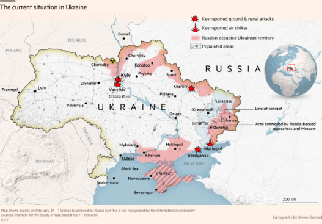
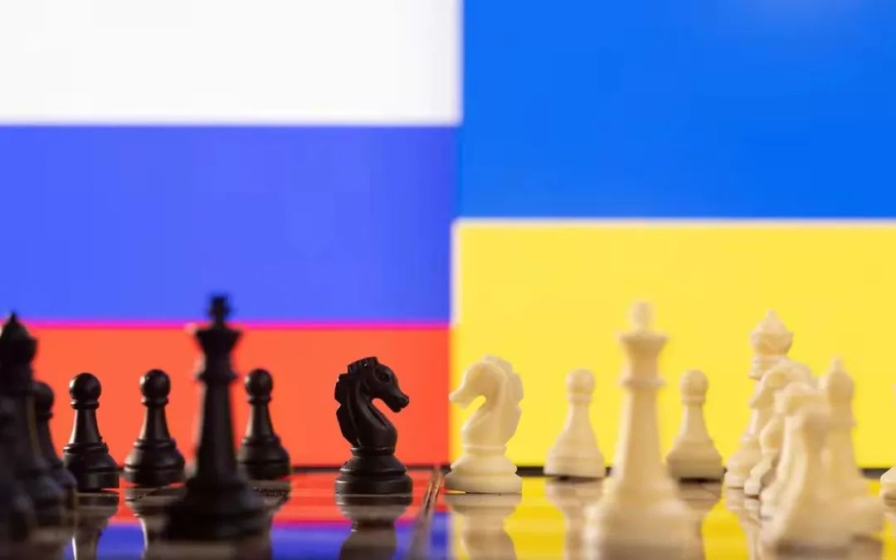
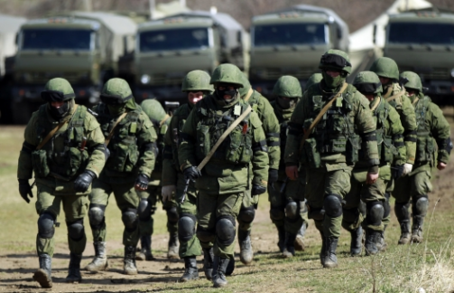

收录于合集

导 读
俄罗斯在乌克兰展开的军事行动已过去6天。从战争局势来看，战场上的直接对抗并非是俄罗斯与乌克兰/北约/美国较量的全部，双方的金融战、舆论战、信息战、电子战、情报战也发挥了关键作用。2014年，俄罗斯以有限军事行动达到了克里米亚“脱乌入俄”的目的。俄打赢这场“混合战争”，极大依赖情报支持。目前国内尚无俄在乌克兰危机中的情报问题研究。本文总体上采用逻辑分析法，利用外语和情报研究优势，广泛收集翻译第一手英文、俄文资料，通过文献分析法，全面梳理俄罗斯在乌克兰危机中的情报活动；通过辩证分析法，总结俄情报特点和启示。情报活动古已有之，各国对其从未等闲视之。俄在乌克兰危机中情报活动的技术进步、理念创新，体现出情报已是“混合战争”中最重要的一种作战样式。

2015年，剑桥乌克兰研究项目总监、剑桥俄罗斯与东欧研究委员会主席Rory Finnin博士在接受采访时认为：“乌克兰危机并不是其社会自然发生的，它其实是俄罗斯情报部门精心策划的破坏乌克兰稳定的系列事件的一部分。”西方军事学者对俄罗斯的说法虽然片面，但也证实着俄在乌克兰危机中比美欧更胜一筹的情报能力。俄罗斯似乎总是第一时间得到准确的情报信息，从而作出了军事介入、让克里米亚脱乌入俄的战略决策；得益于有力的情报支援，俄在舆论战、信息战、电子战及军事行动的“混合战争”中取得了胜利。
01
战略决策中的情报支持
乌克兰原是苏联的加盟共和国，夹于欧盟与俄罗斯之间。美国和北约极力想拉乌克兰加入欧盟，俄罗斯则要维护其在乌克兰的利益。2013年11月，美欧支持乌克兰反对派暴力游行示威，2014年2月成功推翻亲俄总统亚努科维奇。但美欧没料到俄罗斯会强势介入，通过“混合战争”让克里米亚“脱乌入俄”。事实上，俄最初并无兼并克里米亚的明确计划，只是依据情报信息，抓住机会、果断出手。
1.1 情报信息奠定决策基础
乌克兰东部地区大多数居民是俄罗斯族。苏联解体之后，俄对外情报局及军事情报总局保持并拉进与乌境内俄裔居民与亲俄势力的关系。这也使得2004年乌克兰“橙色革命”后，官方虽然力主加入欧盟，但民意并不支持完全倒向西方。2014年乌克兰危机中，俄情报系统通过各自渠道向俄裔民众及亲俄势力表示，俄会坚定保护俄裔人，允诺帮助克里米亚发展经济，并会投资30亿美元建设连接俄与克里米亚的刻赤海峡大桥（2018年建成，普京驾驶卡车通过大桥）。在乌临时政府解散俄裔“金雕”特警部队后，俄军事情报总局策划返回克里米亚的“金雕”特警及库班哥萨克武装组建了自卫队，并提供了经费和装备。自卫队成为俄军事情报总局掌控的一支战斗部队，不但为俄调动部队赢得了时间、提供了方便，也是俄只需派遣特种部队以“小绿人”面目即完成军事行动的重要保证。这些工作和收集到的俄裔民众对乌临时政府失望、希望俄介入、愿意回归俄罗斯等情报，让俄高层认为兼并克里米亚正值良机。
1 .2 关键营救坚定战略决心
2014年2月22日，亚努科维奇被解除乌总统职务。普京接到亚努科维奇电话后，立即命令军事情报总局和无线电侦察部队进行定位和追踪，准确掌握其行踪。得知亚努科维奇被迫逃亡后，普京连夜召集军队和对外情报局、军事情报总局商定营救方案，部署俄特工抢在乌临时政府之前找到亚努科维奇并护送到克里米亚，意图让亚努科维奇在此“东山再起”，后来感到不可能实现之后，又护送他到莫斯科。俄的营救活动，不仅尽到了保护“亲俄派”的道义责任，也避免了亚努科维奇被乌克兰和美欧抓住并利用。俄此举还在国际上取得了保护乌境内俄裔居民、介入乌克兰危机的理由。亚努科维奇到莫斯科后，提供了更全信息，普京最终下定决心兼并克里米亚，开始调动军队和情报机构展开一系列秘密行动。

02
舆论战中的情报支持
乌克兰是美欧与俄罗斯双方情报斗争的“中心地带”。双方在乌克兰都有众多情报机构和特工。俄罗斯虽然在经济实力和战略资源上比不上美欧，但其情报工作却并不落后。乌克兰危机期间，俄就利用丰富的情报信息为发动舆论战、信息战提供了充足的“弹药”。
2.1 适时公开情报“重磅炸弹”，让美欧失去道义民心
公开对目标国家政要的电话录音，意味着暴露情报来源，也会在一定程度上暴露情报监听手段和技术。但在乌克兰危机期间，俄在关键节点，不惜代价地公开了绝密录音情报。2014年2月初，公开了美国助理国务卿纽兰2014年1月在与乌克兰代表交谈时指责欧盟应对不力的粗口“去他妈的欧盟”的电话录音；2014年3月初，公布了爱沙尼亚外长佩特2月25日访问基辅时与欧盟高级官员的电话录音，透露广场狙击事件幕后主使者是反对派领导人所雇用。这些电话录音引发了舆论热潮，不仅令美国和欧盟极其尴尬、互生埋怨，也影响了民心所向，让局势发生变化。尤其是在克里米亚公投前一周，民望甚高、也得到美欧支持的乌前总理季莫申科本已掌控了局势，极可能让乌克兰回归原状。俄及时公布季莫申科说乌境内800万俄罗斯族人毫无用处，“直接用核武器炸死算了”的电话录音。在俄对外情报局、军事情报总局推动下，季莫申科的话引起克里米亚人的反感和恐惧，后来在公投中，克里米亚97%的居民选择了脱乌入俄。
2.2 利用情报资源引领舆论战
俄情报机构除直接抛出重磅“炸弹”外，还利用情报资源，包括情报部门策划、情报信息支援等方式，指导实施了大规模、有节奏的舆论战和信息战。2013年11月下旬游行爆发后，俄公开了美欧策划发动游行、故意制造乌克兰乱局的情报，为舆论抨击美欧提供了证据。在国际舆论对俄不利的时候，对外情报局先后抛出了索契冬奥会面临严重的安全威胁、俄乌将爆发“天燃气之战”等爆炸性、争议性的议题，网络媒体和传统媒体跟风报道，成功转移了世界媒体对俄的批评。俄情报机构还通过收买国外传媒机构、知名人士，以及雇用国外公关公司进行包装宣传等方式，为俄应对西方舆论攻击、争取有利的国际舆论环境发挥了重要作用。

03
军事行动中的情报支持
从2014年2月22日前总统亚努科维奇逃亡，到2月27日俄特种部队控制克里米亚，短暂的时间里，要在美国及北约全天候的监视下，完成军事调动、军事部署、军事行动，难度之大、环境之复杂显而易见，而俄罗斯却在情报的支援下，完成了令美欧吃惊的任务。
3. 1 情报欺骗帮助军事部署
俄方统计，从2014年初开始，美国和北约对俄乌边境的情报侦察呈跃进式激增。北约的侦察飞机、战术航空兵沿俄边境飞行频次分别增加了1倍，远程雷达监控增加了8倍，“全球鹰”无人机在黑海领域定期飞行，北约军舰进入黑海增加长了2倍。但俄却用信息诱导与欺骗，让北约情报机构始终未能发现俄真正战略意图，保证了军事行动的突然性。2015年3月播出的《克里米亚回家之路》纪录片中，普京坦承，曾以增援俄方在克里米亚军事设施的名义，部署情报总局、海军陆战队和空降兵的特种部队。2014年2月26日，在亚努科维奇逃离总统府后的第四天，俄军15万官兵、880辆坦克即在俄乌边境集结，这一切都在北约眼皮底下进行，北约得到的情报是俄要举行例行演义和保障索契冬奥会。俄军事专家维克托·巴拉涅茨在接受采访时曾说，当时大批调动军队彻底迷惑了外国情报机关。
3 .2 情报支援“小绿人”作战
**
**
2014年2月22日，俄军第31空降突击旅从营房乘飞机前往阿纳帕，坐装甲车到达新罗西斯克，再从那里搭乘登陆舰到塞瓦斯托波尔。在此行动期间，做到了全程高度保密，除军事情报总局的情报人员和个别高级指挥员外，其他人都不知道去往何处。俄实行严格的无线电静默制度，俄军官和士兵都有手机，但西方情报部门并未从监听中得出俄军开展行动的结论。到达克里米亚半岛后，突击旅摘掉所有国别和军兵种符号。当他们在克里米亚街头进行军事封锁时，美欧情报部门仍无法相信他们是俄军人员，还称他们为“小绿人”。当乌克兰临时政府下令开火时，渗透进临时政府的俄特工在乌国防部起草了与开火指令相反的命令，并将其下达给驻半岛乌军。在乌指挥官还没弄清“开火还是不开火”时，军营和武器已经全部被控制。“小绿人”和自卫队轻易地控制了克里米亚。后来的克里米亚通过公投入俄，也是在“小绿人”的保护下进行，有效隔绝了美国及西方国家的干扰。
3.3 情报引领信息 干扰和攻 击
俄军事情报总局和特种作战分队对乌及西方国家的信息设施及技术有充分的了解和准确的定位，从而让俄电子部队快速精确地实施信息武器攻击，削弱了乌方的电子感知、通信和指挥能力。在“小绿人”控制克里米亚过程中，俄军事情报总局指挥了对乌高强度且持续的网络攻击，导致克里米亚及其港口设备的数据连通几乎全部被切断，防御系统接近瘫痪，乌克兰政府的官方通信网络也遭受新型网络病毒的袭击。这使得美欧情报部门再无法及时掌握和传递情报，导致美国和北约失去了军事介入的可能。
04
结束语
在信息化条件下，加上卫星网络和美欧情报部门的严密监视，俄在克里米亚半岛如同透明人，但俄却成功瞒天过海，造成了克里米亚脱乌入俄这样的大事件发生。与之对应，美国和西方情报机构虽有先进的情报侦察设备和技术，也有优秀的情报人员，却一再发生误判，始终未能掌握俄的战略意图。这不能不说俄情报工作多有过人之处。
4.1 重视情报能力建设，注重长期、连贯
**
**
俄是老牌情报大国，一直延续着从苏联时期开始的重视情报工作、舍得投入等传统，也一直保持着强大的机构。俄情报机构现有联邦国家安全局、联邦政府联络和情报局、联邦对外情报局、总参谋部军事情报总局、商船侦察队、军兵种和作战部队的情报机关及俄罗斯的私人情报机构等。俄高层领导及情报机构领导多是特工出身，注重持续加强情报能力建设。苏联解体后，大量专业情报人员在前独联体国家长期进行情报活动，拉拢并壮大亲俄力量。在乌克兰更是如此。这些情报活动，奠定了俄在克里米亚军事行动的社会和民心基础。
4.2 注重打好“组合拳”，精准对接、密切协作
**
**
乌克兰危机中，俄情报、外交、宣传机构在信息、舆论宣传方面紧密合作、相互推动，打出了“组合拳”。在军事行动中，“小绿人”神兵天降、精准控制战略要点，以及2015年俄特种部队渗透至叙利亚展开前期侦察，对叙境内重要目标进行标定，为俄空天军展开空袭提供了情报支持等等，都得益于军、地情报机构“里应外合”式的协作和“无缝对接”式的配合，体现出俄在情报活动中的多元化人员组成、共同目标下的密切协作等特点。
4.3 注重发挥“尖刀”作用
隶属于俄总参谋部的军事情报总局（外界简称为“格鲁乌”），同时拥有情报部门和特种部队两个系统。格鲁乌的情报人员每天都会从世界各地发回地区形势分析报告给俄国防部，特别重要的则直接送抵克里姆林宫为总统决策提供参考。格鲁乌的首脑也可直接向总统汇报工作。俄其他驻外情报机构一般会以多种方式隐瞒特工人员身份，在情报侦察活动中也非常谨慎。格鲁乌情报人员在外执行情报和打击活动时则直接大胆，在隐蔽渗透、定点清除、阻止突发事件及对目标国家的地理、设施和人员目标掌握指引等方面犹如尖刀利刃。2014年乌克兰危机中，格鲁乌特种作战部队便承担了发动和组织自卫队、抢占战略要地等重大的先遣性行动。
当前，世界处于百年未有之大变局，国际秩序正在重塑。美国和西方国家的霸权，正全面遏制中国崛起。香港反修例乱局呈现出与乌克兰“颜色革命”相同的特点，中美贸易战让台湾在谋“独”的歧路上越发大胆，全球新冠肺炎疫情下西方各国对中国的“新冷战”思维死灰复燃，领土领海争议被西方国家炒成世界热点……可以说，针对我国的“混合战争”已经存在并将长期存在。这要求我国必须高度重视信息化条件和“混合战争”背景下情报信息的重要作用，加强对美俄等大国的情报战、信息战的研究，学人之长，补己之短，防患于未然。这也要求我国加强情报顶层设计， 大力推进情报信息技术发展、情报人才培养、多元情报力量建设等工作，确保能掌握情报信息主动权，为全面应对“混合战争”打下坚实的基础。
作者： ****侯霞，副教授，硕士生导师，研究方向：军事翻译和外军研究。
来源： 《情报杂志》2021年第2期
排版 | 苏伊文
本文转载自《情报杂志》2021年第2期
文章观点不代表本平台观点